**[Back to the main page](index.html)**
<h1 id="dynamodb">DynamoDB</h1>
<h3 id="introduction">Introduction</h3>
<ul>
<li>Amazon DynamoDB is a fully managed and cloud-hosted NoSQL database</li>
<li>NoSQL databases allow us to have a schema-less design for the tables</li>
<li>We only need to define the key, and the rest of the attributes can be defined at the time of record insertion itself.</li>
<li>It is consistent and predictable performance, flexible data modelling, and durability.</li>
</ul>
<h3 id="terminology">Terminology</h3>
<table>
<thead>
<tr>
<th>Term</th>
<th>Description</th>
</tr>
</thead>
<tbody>
<tr>
<td>Attribute</td>
<td>Entry in a item, which is a key value pair, in dynamodb</td>
</tr>
<tr>
<td>Item</td>
<td>Individual row in a dynamodb table</td>
</tr>
<tr>
<td>Table</td>
<td>A dynamodb table. It is collection of data</td>
</tr>
<tr>
<td>Datatypes</td>
<td>a) Scalar: Number, String, Binary, Boolean, and Null b) Multi-valued: String Set, Number Set, and Binary Set c) Document: List and Map</td>
</tr>
<tr>
<td>Primary Key</td>
<td></td>
</tr>
<tr>
<td>Global Seondary Index (GSI)</td>
<td>The Global secondary indexes allow us to query items on non-primary key attributes.</td>
</tr>
<tr>
<td>Local Secondary Index (LSI)</td>
<td></td>
</tr>
<tr>
<td>Projected Attributes</td>
<td></td>
</tr>
<tr>
<td>Read Capacity Units (RCU)</td>
<td></td>
</tr>
<tr>
<td>Write Capacity Units (WCU)</td>
<td></td>
</tr>
<tr>
<td>Streams</td>
<td></td>
</tr>
<tr>
<td>IOPS</td>
<td>Input/Output Opearations per second</td>
</tr>
</tbody>
</table>
<h3 id="pre-requisites">Pre-requisites</h3>
<ul>
<li>AWS Account </li>
<li>Knowledge on AWS CLI / AWS Console</li>
</ul>
<h3 id="objectives">Objectives</h3>
<ul>
<li>Creating the DynamoDB table</li>
<li>Loading data into the table</li>
<li>Querying data using the DynamoDB</li>
<li>Deleting the DynamoDB table</li>
<li>Analyzing DynamoDB metric on CloudWatch</li>
<li>Downloading and setting up DynamoDB Local</li>
<li>Setting up AWS Command Line Interface</li>
<li>Setting up the Eclipse IDE</li>
</ul>
<h3 id="instructions">Instructions</h3>
<h4 id="creating-the-dynamodb-table">Creating the DynamoDB table</h4>
<ol>
<li>Go to Services -&gt; Select Database -&gt; Click on DynamoDB
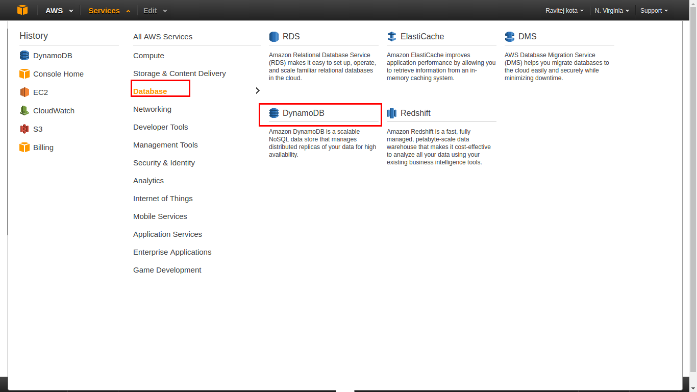</li>
<li>Click on Create Table
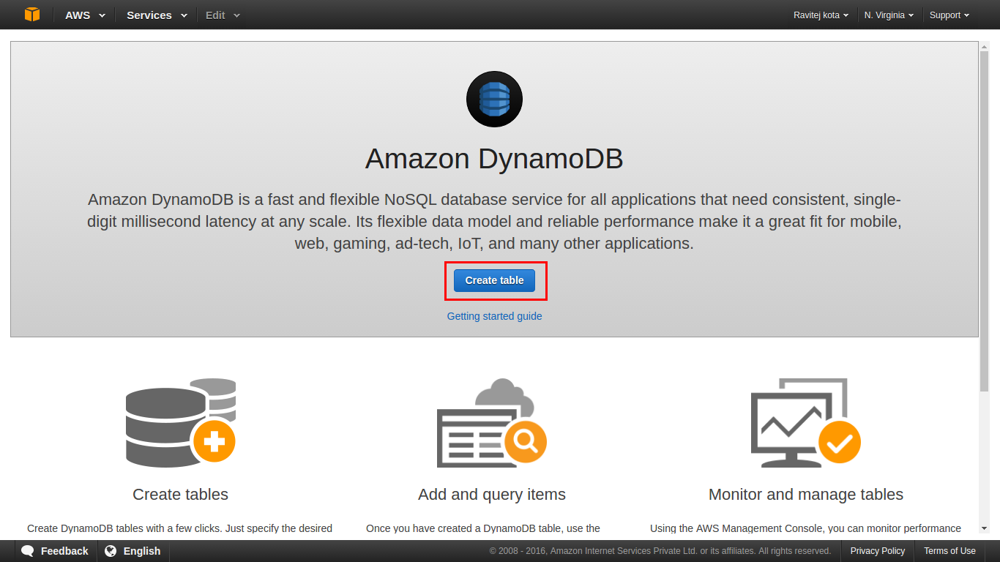</li>
<li>Enter the details Table Name, Primary Key, their data types
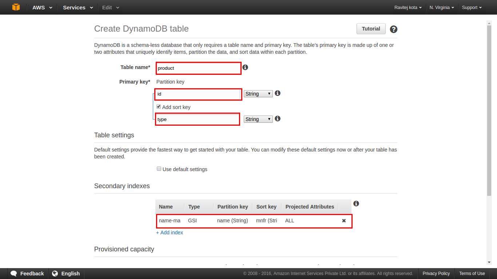</li>
<li>Click on Create
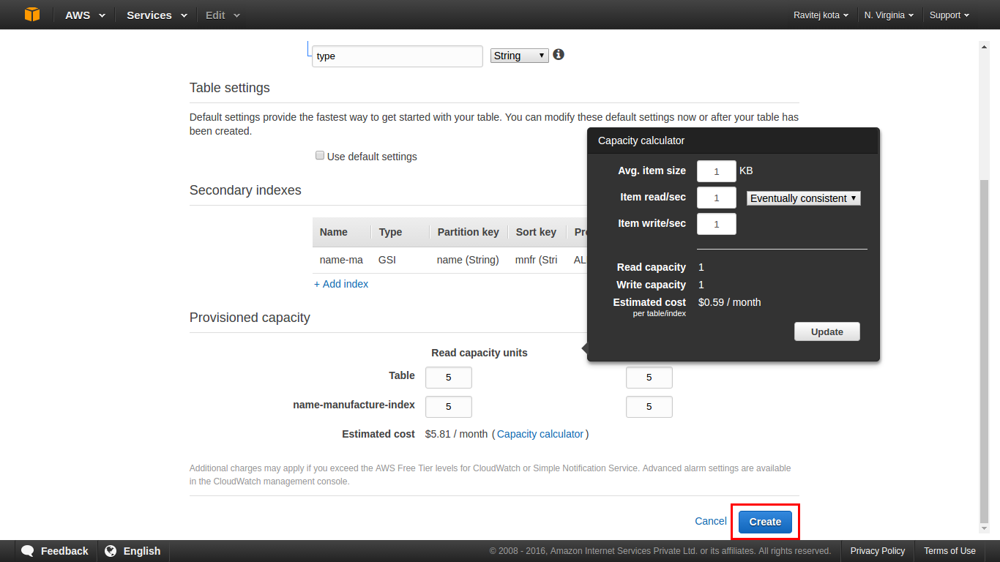</li>
<li>Verify the table and its details
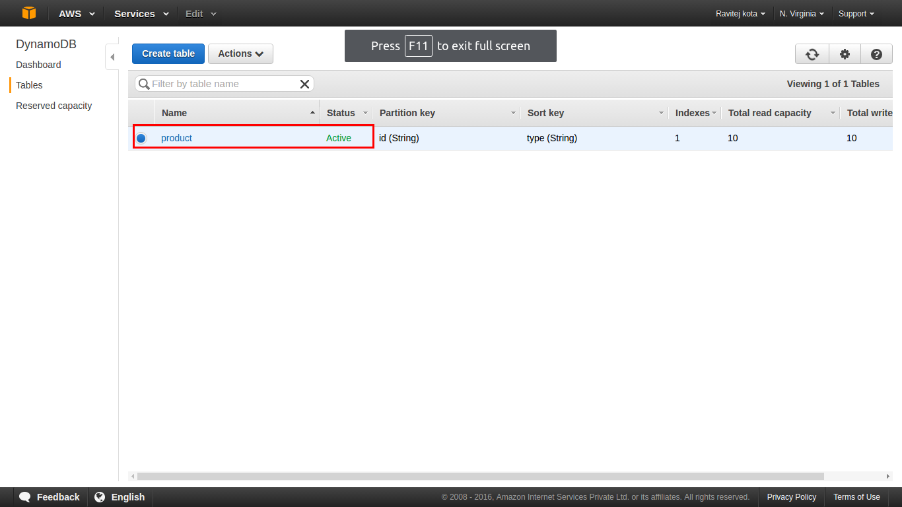
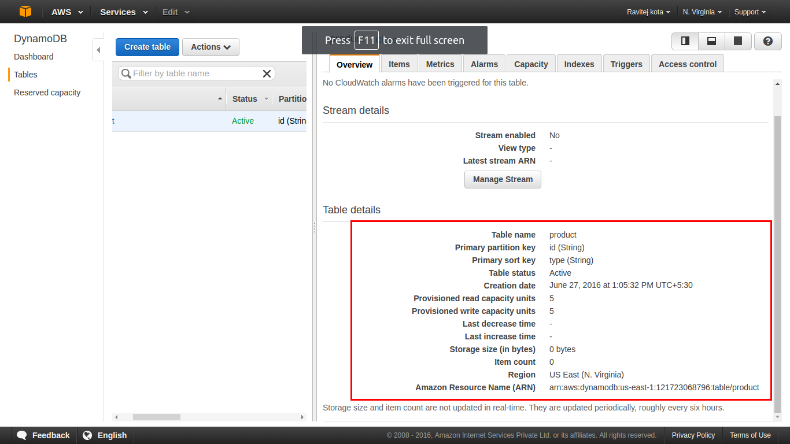 </li>
</ol>
<h4 id="loading-data-create-item-into-the-table">Loading data (Create Item) into the table</h4>
<ol>
<li>Select table in which you wish to load the data</li>
<li>Click on Create Item
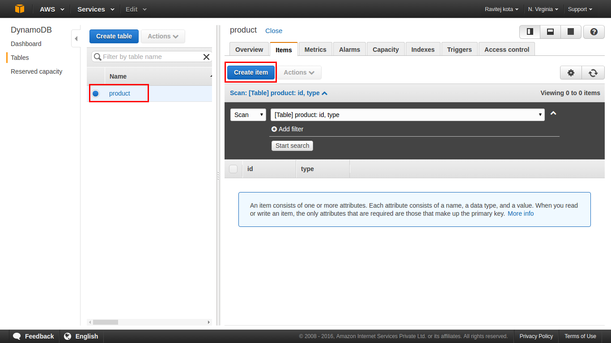</li>
<li>Enter the data w.r.t fields and Click on save
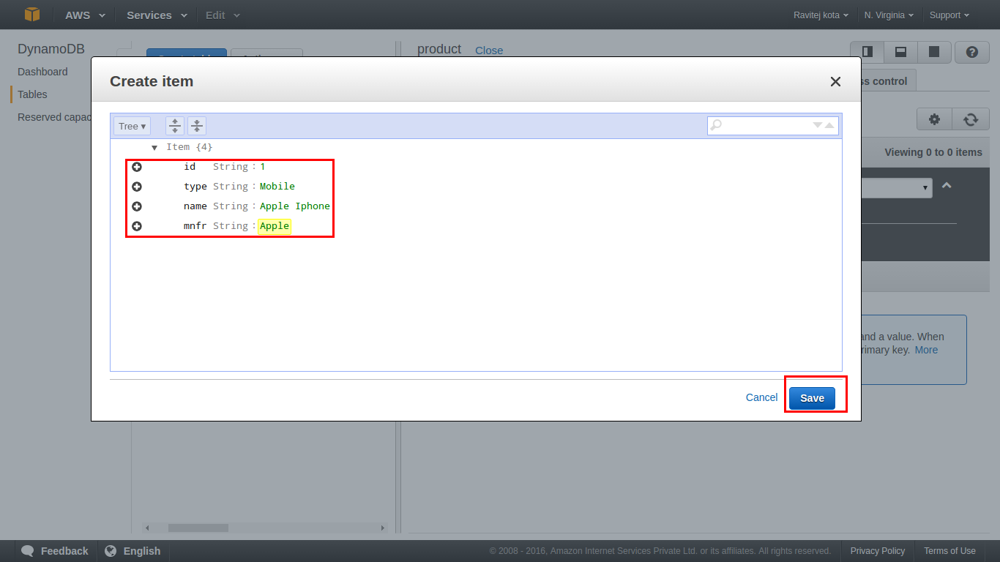</li>
<li>Repeat the Same steps to insert more items</li>
</ol>
<h4 id="querying-scanning-data-using-the-dynamodb">Querying/Scanning data using the DynamoDB</h4>
<ol>
<li>Select table in which you wish to query</li>
<li>Select <code>query</code> from dropdown and give the conditions, click on search
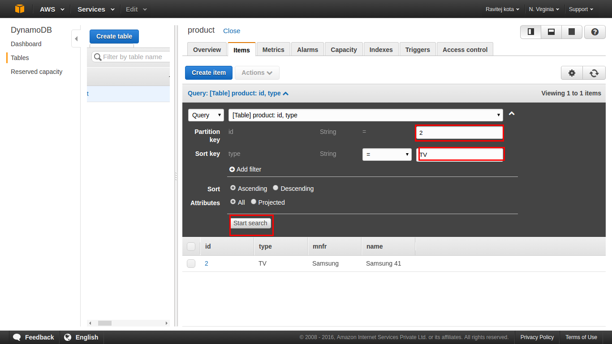</li>
<li>Select <code>Scan</code> from dropdown to scan all items
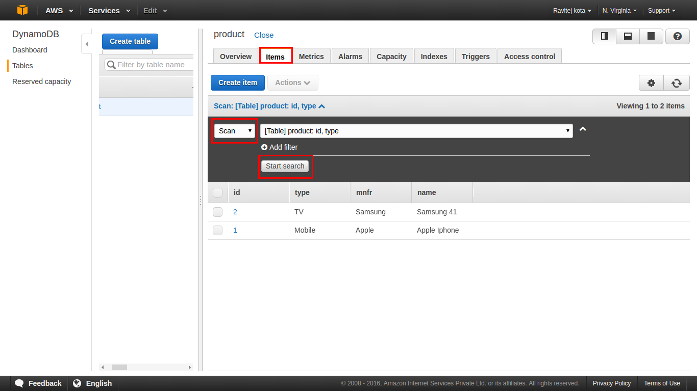</li>
</ol>
<h4 id="deleting-the-dynamodb-table">Deleting the DynamoDB table</h4>
<ol>
<li>Select table in which you wish to delete and Click Actions -&gt; Delete table
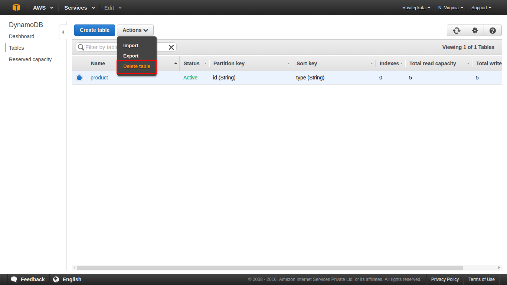</li>
<li>This will open up a pop-up window, which will ask you for your confirmation. In that Click on Delete
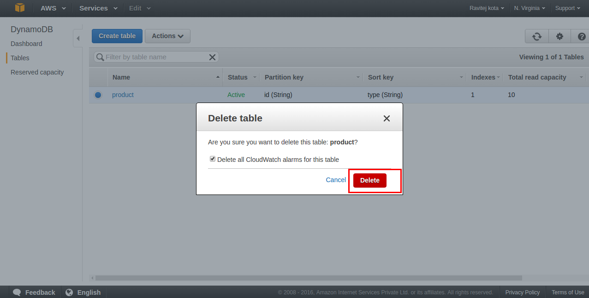</li>
<li>This will start the deleting process, which will run for a while and erase the
complete data</li>
</ol>
<h4 id="analyzing-dynamodb-metric-on-cloudwatch">Analyzing DynamoDB metric on CloudWatch</h4>
<ul>
<li>DynamoDB CloudWatch metrics in order to see the
DynamoDB performance.</li>
<li>CloudWatch provides real-time monitoring and alerting mechanisms to services provided by DynamoDB.</li>
<li>you will see various graphs, such as Read Capacity, Throttled Read Requests, Write Capacity, Throttled Write Requests, Read-Write Capacity for Global Secondary Indexes, that we created. It will also show you graphs related to Read/Write Latency and Query/Scan latency for a given time frame.
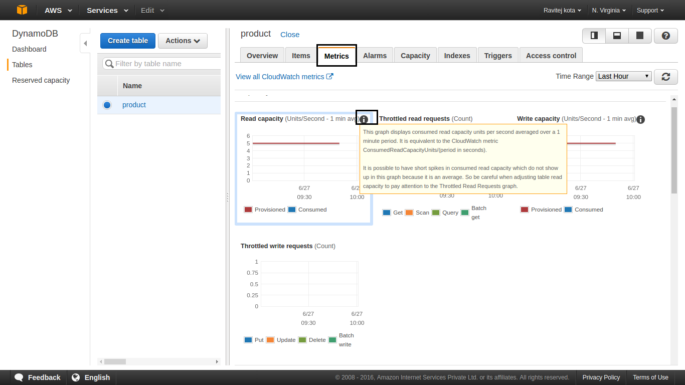</li>
</ul>
<h4 id="downloading-and-setting-up-dynamodb-local">Downloading and setting up DynamoDB Local</h4>
<p>DynamoDB Local is a simple .jar fi le that runs on your local machine and mimics the actual
DynamoDB.</p>
<ol>
<li><a href="https://java.com/en/download/linux_manual.jsp">Install Java</a></li>
<li><p>Download the DynamoDB latest version</p>
<ul>
<li><a href="http://dynamodb-local.s3-website-us-west-2.amazonaws.com/dynamodb_local_latest.tar.gz">tar.gz format</a></li>
<li><a href="http://dynamodb-local.s3-website-us-west-2.amazonaws.com/dynamodb_local_latest.zip">zip format</a></li>
</ul>
</li>
<li><p>Extract the contents and copy the extracted directory to a location of your choice.</p>
</li>
<li><p>To start DynamoDB, open a command prompt window, navigate to the directory where you extracted DynamoDBLocal.jar</p>
<pre><code> java -Djava.library.path=./DynamoDBLocal_lib -jar DynamoDBLocal.jar -sharedDb
Help: java -Djava.library.path=./DynamoDBLocal_lib -jar DynamoDBLocal.jar -help
</code></pre></li>
<li>Access the built-in JavaScript shell.
<code>http://localhost:8000/shell</code>
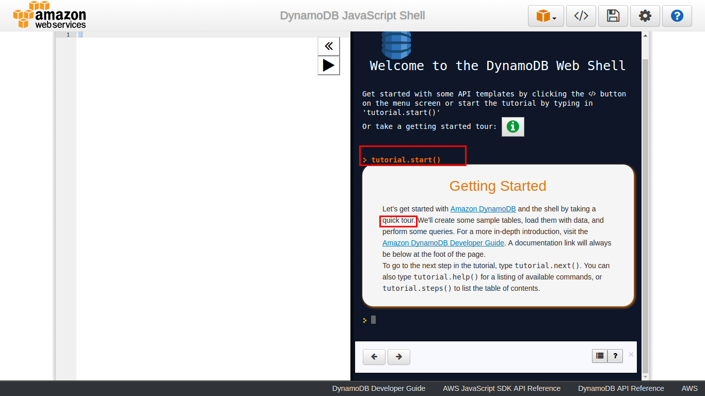</li>
<li>Export the following environemnt variables in scripts/setup (If we use SDK)<pre><code>export AWS_ACCESS_KEY_ID=&quot;AWS_ACCESS_KEY&quot; || “dummyAccessKey”
export AWS_SECRET_ACCESS_KEY=&quot;AWS_SECRET_KEY&quot; || “dummySecretKey”
export AWS_ACCOUNT=&quot;AWS_ACCOUNT&quot;
export AWS_REGION=&quot;AWS_REGION&quot; || “ap-northeast-1&quot;
export AWS_ENDPOINT=&quot;dynamodb.$AWS_REGION.amazonaws.com&quot; || http://localhost:8000
export AWS_DYNAMODB_TBL_PREFIX=&quot;ANY_PREFIX&quot; -&gt; This is optional
</code></pre></li>
</ol>
<h4 id="setting-up-aws-command-line-interface">Setting up AWS Command Line Interface</h4>
<p>The AWS Command Line Interface allows us to operate various AWS resources from the command line itself</p>
<ol>
<li><a href="http://docs.aws.amazon.com/cli/latest/userguide/installing.html">Install AWS CLI</a></li>
<li>Open cmd prompt and type <code>aws configure</code></li>
<li>Enter the credentials and region</li>
<li>To List the API reference <code>aws dynamodb help</code></li>
<li>To know particular cmd help <code>aws [options] &lt;command&gt; &lt;subcommand&gt; [parameters] list-tables help</code></li>
<li>Eg:`<pre><code>aws list-tables
aws dynamodb query --table-name product --key-conditions file://conditions.json
</code></pre></li>
</ol>
<h4 id="setting-up-the-eclipse-ide">Setting up the Eclipse IDE</h4>
<ol>
<li><a href="https://eclipse.org/downloads/">Install Ecllipse</a></li>
<li>Open Eclipse, and go to Help | Install New Software</li>
<li>In the Work with box, type <a href="http://aws.amazon.com/eclipse">http://aws.amazon.com/eclipse</a> , and press Enter.</li>
<li>Select AWS Toolkit for Eclipse, and install the plugin:</li>
<li>After that work with AWS explorer.</li>
</ol>
<h3 id="references">References</h3>
<ul>
<li><a href="http://docs.aws.amazon.com/amazondynamodb/latest/developerguide/Introduction.html">http://docs.aws.amazon.com/amazondynamodb/latest/developerguide/Introduction.html</a></li>
<li><a href="http://serebrov.github.io/html/2015-02-01-dynamodb-local.html">http://serebrov.github.io/html/2015-02-01-dynamodb-local.html</a></li>
<li><a href="https://github.com/awslabs">https://github.com/awslabs</a></li>
<li><a href="https://www.datadoghq.com/blog/top-dynamodb-performance-metrics/">https://www.datadoghq.com/blog/top-dynamodb-performance-metrics/</a></li>
</ul>
<hr>
<center><strong><em>Thank You</em></strong><br/><span style="color:orange;"><i>Sivaram</i></center>
<hr>